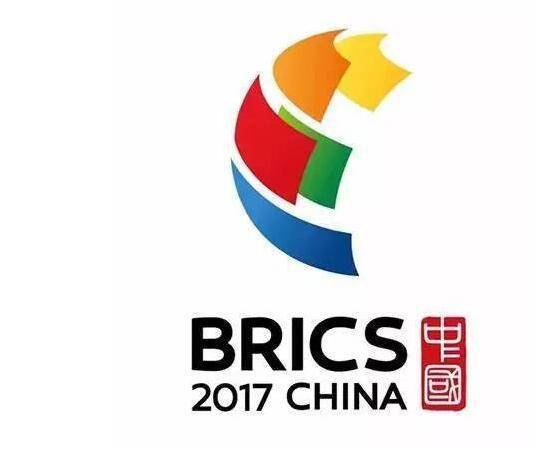

- 培训对象
- IT、HR、采购、销售及技术部门
- 核心难点
- 基础差异大、不同口音、部门专业词汇
- 课程设计
- 基础录播补强 + AI 外刊日常学习 + 小班直播场景演练
- 训练目标
- 听懂商务信息，参与跨部门对话与现场问答
课程与服务
- 课程怎么定
- 先测评分层，再按岗位设计
围绕英文会议、客户沟通与行业主题，匹配员工基础和工作需求。
- 员工怎么学
- 日常自学，结合直播训练
AI 外刊、小班直播、1v1 与基础录播，按团队时间和目标组合。
- HR 怎么跟进
- 学习进度与阶段反馈
跟进录播进度、直播到课和测试成绩，结合项目沟通调整安排。
语言培训经验，
在真实项目中积累。
上海世博会城市文明志愿者语言培训合作伙伴

金砖国家厦门会晤志愿者英语培训合作机构杭州亚运会官方语言培训机构
从团队需求开始
先选一个培训目标。
不必先研究课程。
从员工最需要用英语的地方开始。
适合跨国协作、海外业务及国际化团队
跨国会议里，
听得懂，也接得上。
遇到不同口音、临场提问或跨部门讨论，把听力输入和实际对话放在一起练。
- 听懂关键信息，适应不同口音
- 清晰介绍工作、表达观点
- 在会议中提问、回应与确认
建议课程组合测评后按需调整
- 日常输入
AI 外刊精读
在真实语境中积累词汇与听力素材
- 集中训练
定制小班直播
练习全球会议、跨文化沟通与现场应答
- 专项强化
定制 1v1
围绕关键岗位的个人表达难点训练
四种学习方式，可以如何组合？
AI 外刊精读
日常词汇、阅读、听力与跟读训练；主题可按行业需求调整。
定制小班直播
团队共性场景集中训练，强调课堂互动与即时表达。
定制 1v1 直播
结合个人水平、目标与时间排课，主讲老师与班主任共同跟进。
基础录播课程
覆盖语音、通用职场英语与商务语境，适合基础补强。
AI 外刊精读 · 日常学习
一篇好内容，
带动每天的英语练习。
把碎片时间用来读懂一篇文章、积累实用表达，再开口练一练。选题可结合行业与岗位需求。
AI 外刊精读学习方式示意
职场沟通 · 语境词汇
Let’s review the proposal before our next meeting.
proposal /prəˈpəʊzəl/
n. 提议；方案
在这句话中，指会议前需要审阅的方案。
下次开会前，我们先审阅一下方案。
话题不止于职场
跨领域选题示例 · 可按行业定制
- 科技
AI 如何改变工作
- 健康
膳食纤维为何走红
- 旅行
无护照旅行还有多远
- 太空
为火星生活做准备
- 科研
一颗原子也不浪费
- 商业
品牌为什么更换标志
项目交付
员工有学习路径，
HR 有项目进度。
从需求到结业，每个阶段都有安排。
让培训负责人看得见进展，也能及时调整。
- 01
需求访谈
明确岗位、业务场景、员工基础与可投入时间。
- 02
测评分层
结合入门测评匹配基础层与进阶层，配置课程。
- 03
学练结合
排课、课前提醒、作业反馈与学习群答疑持续跟进。
- 04
阶段复盘
通过阶段测、月度项目沟通与结业报告回顾学习。
HR 可以收到什么？每月项目反馈
- 录播学习进度
- 直播到课情况
- 平均测试成绩
- 项目沟通与后续安排
部分企培合作机构
过往合作经历 · 不分先后
能围绕我们的行业和岗位定制吗？
可以。外刊主题、直播话题与训练任务可结合行业、岗位场景和员工基础调整。先明确实际工作中需要用英语完成什么，再安排课程内容。
员工英语基础差异很大，怎么一起培训？
通过入门测评与需求访谈分层。基础薄弱员工先补语音、词汇与通用表达，有一定基础的员工强化会议、跨文化沟通等具体场景。
工作忙，学习时间怎么安排？
AI 外刊与录播可安排在碎片时间，直播按团队可上课时段排课。外刊方案可按每日或工作日推送，具体频次和项目周期在需求沟通后确定。
HR 能了解学习参与和效果吗？
项目可按月反馈录播学习进度、直播到课次数和平均测试成绩，并通过项目会议沟通后续安排；阶段测与结业报告用于复盘。具体反馈范围随采购课程与服务确定。
培训费用和周期怎么确定？
需要结合参训人数、员工基础、课程形式、课时和服务范围制定。明确团队目标后，再沟通课程组合、项目周期和报价；本页不预设统一价格。
下一步，从一次需求沟通开始
把团队的需求，
变成清晰的培训计划。
带着你的工作场景来，
一起梳理适合团队的学习安排。
- 员工分层与训练重点
- 课程组合与学习节奏
- 项目排期与预算范围
企业培训规划师联系方式即将公布
可先生成需求摘要，保存后用于咨询。
当前页面不会自动发送或提交需求。
企业培训需求
先说说培训方向
只需选一个目标，其余信息可稍后确认。